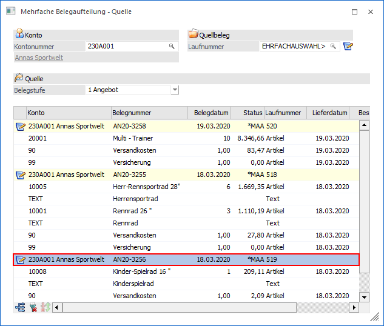
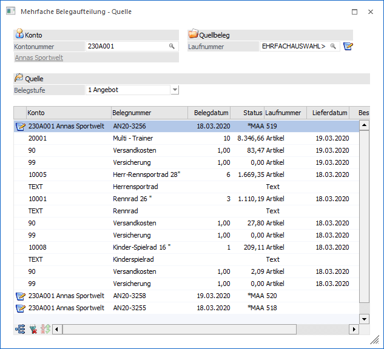
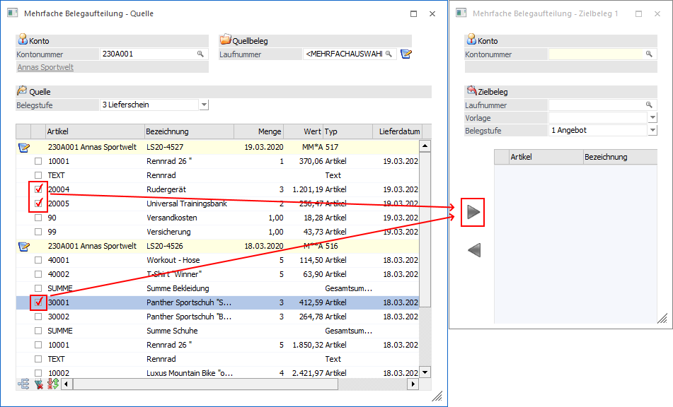
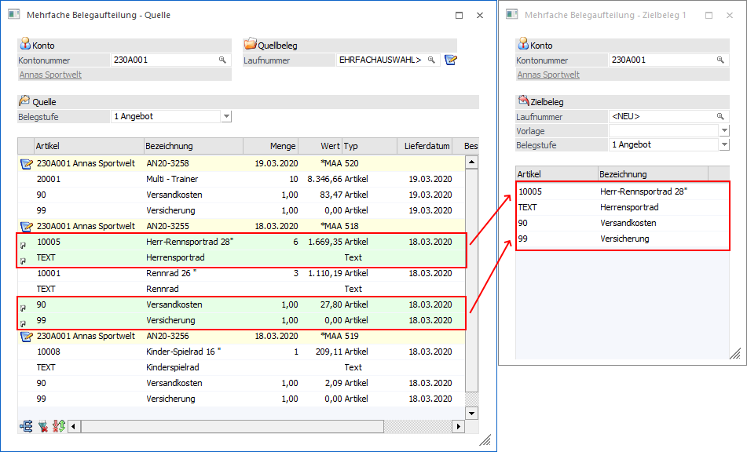

Ausgehend von den angezeigten Datensätzen in der Tabelle "Quellbelegzeilen" können verschiedene Aktionen durchgeführt werden:
1. Belegzeilen zusammenfassen
Wenn in der Tabelle mehrere Belege (nicht gerechnet / nicht gedruckter Belege oder offene Angebote) vorhanden sind, dann können alle Belegzeilen durch Anklicken des Buttons "Belegzeilen zusammenfassen" auf einen Beleg "zusammengefasst" werden. Hierbei kann über die Einstellungen (siehe Button "Optionen") definiert werden, ob zusammengefasste Zeilen aus den Belegen verschoben oder kopiert werden sollen.
Beispiel "Belegzeilen zusammenfassen"
Zuerst muss in der Tabelle der Beleg markiert werden, in den die Belegzeilen übernommen werden sollen.

Durch das Anklicken des Tabellenbuttons "Belegzeilen zusammenfassen" werden die Belegzeilen anschließend in den markierten Beleg übertragen. Am Ende der Tabellen werden dann die "Ausgangsbelege" angezeigt, wo nur noch die "Kopfinformationen" ersichtlich sind (Laufnummer, Belegnummer, Datum, Status). Zu diesem Zeitpunkt wurden aber keine Daten verändert.

Die Änderungen treten abschließend durch Anwahl des Buttons "Speichern", "Belegerfassung" oder "Beleg drucken" in Kraft.
2. Belegzeilen in weitere Belege verschieben / kopieren
Ausgehend von den Belegen im Bereich "Quelle" können Belegzeilen in unterschiedliche Belege verschoben bzw. kopiert werden.
Grundsätzlich können bis zu 10 Zielbelege angesprochen werden, wobei das Konto wahlweise manuell eingegeben werden kann. Werden Belegzeilen via Drag & Drop auf ein neues, leeres Zielfenster gezogen, so wird die Kontonummer automatisch aus dem Quellbeleg übernommen, wobei diese auch individuell abgeändert werden kann. Die Belegstufe, welche der Zielbeleg erhält, wird vom Quellbeleg abgeleitet.
Jeder Zielbeleg kann eigens bearbeitet werden, wobei in weiterer Folge jeweils die Beleg-Info, die Belegerfassung und der Belegdruck zur Verfügung stehen. Der Quellbeleg bleibt in der Zwischenzeit geöffnet, um ein zügiges Weiterarbeiten gewährleisten zu können.
Beispiel "Belegzeilen verschieben / kopieren"
Zuerst muss in der Tabelle der Quellbelege jene Zeile markiert werden, die in weiterer Folge in einen Zielbeleg verschoben / kopiert werden soll. Mittels Drag & Drop oder den Buttons "Zeilen aus dem Quellbeleg übernehmen" bzw. "Zeilen in den Quellbeleg zurückgeben" kann die Zeile bzw. können die Zeilen zwischen Quellbereich und Zielbereich transferiert werden.
Eine Übergabe von Belegzeilen aus dem Zielbeleg in den Quellbeleg kann auch mittels Doppelklick auf die Zeile durchgeführt werden.
Neben der Einzelübergabe ich auch eine Massenübergabe möglich. Hierfür müssen die gewünschten Belegzeilen nur markiert und übergeben werden (Drag & Drop oder per Button "Zeilen aus dem Quellbeleg…").

Hinweis
Ob per Drag & Drop bzw. Doppelklick oder per Checkbox und Button gearbeitet werden soll, kann in den Optionen definiert werden.
Achtung
Ob Zeilen bei diesem Vorgang verschoben oder kopiert werden sollen, muss über den Button "Optionen" eingestellt werden. Hierbei ist darauf zu achten, dass bei gedruckten Lieferscheinen die Zeilen immer "verschoben", d.h. aus der Quelltabelle gelöscht, werden (im Lieferschein selbst werden diese Zeilen, gleich wie im Beleg splitten, mit Menge 0 belassen).
Unabhängig von der Einstellung in den Optionen werden Zeilen…
ü … in den Zielbeleg verschoben, wenn während der Drag & Drop-Operation die Umschalttaste gedrückt wird.
ü … in den Zielbeleg kopiert, wenn während der Drag & Drop-Operation die Steuerungstaste gedrückt wird.
Verschobene Zeilen werden auch sofort im Zielbeleg angezeigt (und im Quellbeleg nicht mehr); kopierte Zeilen werden farbig und mittels einem eigenen Symbol gekennzeichnet:
